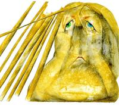

Merkel busca un nuevo dibujo de la UE
Sun, 27 Nov 2011 07:00:00 +0100
La búsqueda de soluciones a la crisis apremia tras una semana nefasta, en la que incluso Alemania fracasó parcialmente en la venta de 6.000 millones de euros de su deuda soberana. Con el agua al cuello de todos, ayer saltaron nuevas informaciones sobre las "negociaciones secretas" entre Berlín y París, que quieren reformar con la mayor rapidez el Pacto de Estabilidad del euro.

A bordo del Titanic
Sun, 27 Nov 2011 07:00:00 +0100
Italia ha echado del Gobierno a sus políticos; ha puesto al frente a un tecnócrata como Mario Monti, excomisario europeo de Mercado Interior y Competencia respetado en Bruselas y en las instituciones financieras; se ha dotado de un Consejo de Ministros cuajado de economistas y gestores; ha puesto en marcha las reformas que le exigía la Unión Europea con grandes elogios de Merkel, y sigue penando en los mercados de deuda con unos intereses a largo plazo que superan la fatídica cota del 7%. Tampoco en Roma hay milagros.
Grecia empieza a encarcelar a los que engañan al fisco
Sun, 27 Nov 2011 07:00:00 +0100
Fakelaki significa sobrecito y es una lacra griega. Hace referencia a pequeños sobornos o sobrepagos que a veces se utilizan para conseguir algún servicio o agilizar un proceso, incluso en un hospital público, y ayuda a engrosar las cifras de todos los ingresos que escapan al fisco. El peso de la economía sumergida en Grecia, imposible de cifrar, se estima en el 30% del PIB. Otros cálculos son muchos más concretos: el grupo de trabajo europeo creado para ayudar al país a reformar su sector público cifró la semana pasada en 60.000 millones la evasión fiscal.
La CNMV reclama las competencias para supervisar a las empresas de auditoría
Sat, 26 Nov 2011 07:00:00 +0100
El vicepresidente de la CNMV, Fernando Restoy, manifestó ayer que en el marco de la revisión general del modelo de supervisión, y en línea con el modelo vigente en otros países europeos, "debería evaluarse la asignación en nuestro país de la responsabilidad de supervisión de la actividad de auditoría a la CNMV". Ahora esa labor recae en el ICAC, organismo dependiente del Ministerio de Economía y Hacienda. Restoy añadió que debería procederse "a una reorganización de la supervisión financiera en España".
Polémica sobre las cláusulas que debían regular las reestructuraciones de deuda
Sat, 26 Nov 2011 07:00:00 +0100
Otro paso falso en la defensa del euro. Varios países de la UE están presionando para que se elimine la obligación de incluir Cláusulas de Acción Colectiva (CAC) en las futuras emisiones de bonos a partir de julio de 2013. La polémica medida fue acordada en marzo de este año en el marco del fondo de rescate permanente, llamado Mecanismo Europeo de Estabilidad (MEDE), por imposición expresa de la canciller alemana Angela Merkel.
El PP desmiente que estudie pedir ayuda internacional como dice Reuters
Fri, 25 Nov 2011 17:21:00 +0100
El futuro Gobierno español, que asumirá oficialmente los poderes a mediados de diciembre, estudia solicitar ayuda financiera internacional como una de las opciones para rehacer las finanzas del país, han afirmado a Reuters fuentes cercanas al PP. Sin embargo, un portavoz del partido dirigido por Mariano Rajoy ha negado a este periódico que barajen esta opción. "No existe ni siquiera futuro Gobierno, solo futuro presidente [del Ejecutivo] y no está en eso", ha asegurado.
Sarkozy y Merkel dijeron a Monti que "si cae Italia cae el euro"
Fri, 25 Nov 2011 16:45:00 +0100
La canciller alemana, Angela Merkel, y el presidente de Francia, Nicolás Sarkozy, reconocieron ayer que "la caída de Italia" significaría "inevitablemente" el final del euro, según ha informado hoy el Gobierno italiano. En un comunicado, el Ejecutivo italiano ha informado de la cumbre celebrada ayer en Estrasburgo (Francia) entre el primer ministro italiano, Mario Monti, y los mandatarios de Francia y Alemania, y de cuyos resultados ha informado hoy Monti al Consejo de Ministros.
"Si se achatarra el banco, las ayudas del Estado no valdrían nada"
Sun, 27 Nov 2011 07:00:00 +0100
Se han subido al barco en medio de una tormenta planetaria. Con la aristocracia del sistema financiero pidiendo que se desguacen las cajas nacionalizadas, José María Castellano (A Coruña, 1947) y César González-Bueno (Madrid, 1960), presidente y consejero delegado de Novagalicia Banco, intentan enderezar el rumbo de la entidad heredera de la frágil fusión gallega. El Estado ha inyectado 3.600 millones y tiene el 93% del capital. Ellos creen que lo peor sería vender la entidad a un tercero.
La CNE aplaza el estudio de miles de recursos interpuestos por los productores fotovoltaicos
Sat, 26 Nov 2011 07:00:00 +0100
La Comisión Nacional de la Energía (CNE) no analizará los miles de recursos presentados por los productores fotovoltaicos en contra de los recortes de primas aplicados por el Gobierno hasta que las liquidaciones mensuales sean firmes y no provisionales como ahora, lo que podría tardar cerca de dos años.
S&P rebaja la calificación de Bélgica de AA+ a AA
Fri, 25 Nov 2011 18:56:00 +0100
La agencia de calificación Standard & Poor's ha rebajado esta tarde la calificación de Bélgica de AA+ a AA, lo que sigue suponiendo un nivel de calidad alto, por el riesgo existente de que el país deba intervenir en el sector financiero y por tanto aumente su ya alto endeudamiento. Además, sitúa su nota de solvencia en perspectiva negativa, lo que podría suponer más recortes en el futuro.
CCOO apuesta por un "gran pacto" por el empleo
Sun, 27 Nov 2011 07:00:00 +0100
El secretario general de CC OO, Ignacio Fernández Toxo, apostó ayer por la negociación de un "gran pacto" por el empleo, y agregó que se necesitan "recursos, tiempo y esfuerzo" para generar un clima favorable a la creación de puestos de trabajo.
La ideología del miedo
Sun, 27 Nov 2011 07:00:00 +0100
El temor ha sido siempre uno de los aliados más fieles del poder, que intenta que la población viva inmersa en él. La creación artificial de atmósferas de miedo obliga a los ciudadanos a blindarse frente a los contextos sociales. El miedo que anida en el cerebro quebranta la resistencia, genera pánico y paraliza la disidencia; no hay poder en la Tierra que no haya confiado en alguna forma de terror. Tras un desastre -natural, político, económico- el miedo inicial deja paso a la ansiedad; la gente teme más los riesgos que se le imponen que los que acepta. Todos los esfuerzos por liberar al hombre han sido en realidad impulsos por liberarlo del miedo, para crear las condiciones en que no sintiera la dependencia como una amenaza; cuanto más asesino y más totalitario es el poder más priva al hombre de libertad porque lo que engendra es temor. Surge así lo que algunos han denominado la ideología del miedo, definido en el Diccionario de la Lengua Española de la Real Academia como una "perturbación angustiosa del ánimo por un riesgo o daño real o imaginario". El miedo como arma de dominación política y control social; el miedo como herramienta de destrucción masiva en la guerra de clases. A lo largo de la historia ha habido todo tipo de movimientos sociales y culturales fundamentados en esa sensación, habitualmente desagradable, provocada por la percepción de ese peligro real o supuesto, presente, futuro o pasado. El miedo no solo como construcción social sino también ideológica. Como es omnipresente y está arraigado, produce desconfianza y conflicto con el "otro", al que se atribuye la culpa de lo ocurrido o de lo que puede acontecer, y genera, por tanto, la necesidad de protegerse de él. Esa es la ideología del miedo, que llega a través de sus transmisores, los "fabricantes de miedo", muy vinculados en la contemporaneidad a los medios de comunicación de masas y a la información, comunicación y propaganda que se transmite instantáneamente a través de Internet.

Todos culpan al expresidente Castillejo
Sun, 27 Nov 2011 07:00:00 +0100
Fue en 2004 cuando el Banco de España vio la luz. Concretamente, en un mes de septiembre de hace siete años, cuando se inició una inspección de la gestión de la hoy extinta Cajasur y entonces gobernada por el sacerdote Miguel Castillejo. "Esta inspección supuso un cambio total en la percepción supervisora que se tenía de la caja, determinando un perfil de riesgo global para la caja alto".
Italia se ve forzada a cuadruplicar el interés para colocar su deuda
Sat, 26 Nov 2011 07:00:00 +0100
Europa saluda a Mario Monti con buenas palabras, pero los mercados se comportan como si en el Palacio Chigi siguiera Silvio Berlusconi de primer ministro. Italia logró colocar ayer 8.000 millones de euros en letras a seis meses y 2.000 millones en bonos a dos años, pero solo ofreciendo unos tipos de interés nunca antes vistos desde que el euro es euro. En el caso de las letras, el interés fue del 6,5%, casi el doble de lo que pagó en la anterior subasta, un 3,53%, celebrada el pasado 25 de octubre. Con respecto a los bonos, el Tesoro italiano no tuvo más remedio que llegar hasta el 7,8%, o lo que es lo mismo, un interés cuatro veces mayor que la subasta anterior.
Alquilar vivienda: más oferta a mejor precio
Fri, 25 Nov 2011 17:58:00 +0100
La crisis empuja hacia la normalización del alquiler que va en aumento: hay alrededor de un millón más de viviendas en España que hace diez años, según el economista Julio Rodríguez. "La necesidad de recursos adicionales lleva a que los que tienen una segunda vivienda cercana se vayan a vivir a ella para alquilar la primera. Los promotores y los particulares, como los inversores que reformaban para vender, se ven abocados al arrendamiento", explica Alex Vázquez, director de alquiler residencial de Forcadell.
La UE plantea que la banca no participe en el fondo de rescate
Fri, 25 Nov 2011 17:18:00 +0100
Los miembros de la eurozona están discutiendo suprimir la participación del sector privado (bancos y aseguradoras) de las condiciones del futuro fondo de rescate que debe sustituir al actual a partir de 2013, según han confirmado cuatro fuentes europeas a Reuters y ha dejado entrever el propio Gobierno alemán, que fue quien propuso la medida. Junto a ello, añade esta agencia de información económica, también se está debatiendo que el Banco Central Europeo (BCE) compre masivamente bonos europeos si antes de cierra un acuerdo para una mayor integración fiscal.
Las hipotecas cierran el trimestre con el peor dato en dos décadas
Fri, 25 Nov 2011 07:00:00 +0100
Este año será recordado como el anus horribilis del sector inmobiliario, peor aún que ese ya lejano 2008 en el que empresarios y trabajadores se dieron cuenta de que la crisis iba en serio. Todo el año ha sido malo, pero el tercer trimestre amenaza con convertirse en el peor, a la espera de lo que ocurra en la última parte del año. Entre julio y agosto, se constituyeron menos de 90.000 hipotecas sobre viviendas, la peor cifra que recoge la estadística del INE, que inicia su serie en 1995. Otra cifra para el libro Guinness: las menos de 85.000 compraventas que se cerraron en el trimestre constituyen la cifra más baja desde 2005, cuando el Colegio de Registradores empezó a llevar la cuenta.
"Cristo y Mahoma beberían coca-cola"
Sun, 27 Nov 2011 07:00:00 +0100
Pregunta. Tras OK, coca-cola es la palabra más reconocida del mundo. En Google tiene 60 millones de resultados. ¿Usted cuántas veces la dice al día?
Commerzbank estudia crear un 'banco malo' para los bonos de periféricos
Sat, 26 Nov 2011 07:00:00 +0100
Commerzbank, el segundo banco alemán por activos, está estudiando crear un banco malo en el que depositaría los bonos soberanos de los países golpeados por la crisis de deuda. Esta entidad tendría el respaldo del Gobierno, según adelantaba ayer Financial Times en su edición digital. La entidad alemana, que tendrá que aumentar en 3.000 millones su capital para cumplir con los parámetros de solvencia marcados por la Unión Europea, ha admitido que la crisis de deuda soberana ha golpeado su balance. En el banco malo, Commerzbank incluiría, al menos, los 13.000 millones que acumula en bonos de países como Italia, Grecia y España.
El Ibex se deja un 6,67% en la semana postelectoral
Fri, 25 Nov 2011 16:26:00 +0100
El mal resultado que ha tenido hoy Italia en una subasta de deuda a 6 meses y dos años ha reavivado las dudas en una semana para olvidar en los mercados financieros. Por su culpa, se han prorrogado las ventas sobre la deuda española, pese a que el BCE estaría de nuevo comprando los títulos del Tesoro. En la renta variable, no obstante, tras las fuertes caídas registradas en las Bolsas por la mañana, la noticia revelada por Reuters de que se está planteando la posibilidad de eliminar la incorporación obligatoria del sector privado en el fondo de rescate ha frenado los descensos, aunque no ha sido suficiente para que el español Ibex 35 cierra la semana postelectoral con un descenso del 6,67%. También ha ayudado a animar a los inversores la apertura en verde de Wall Street.